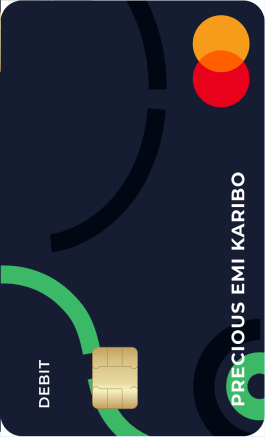

Arca’s card management solutions provide options that enable efficient card and
transaction management, built on a secure infrastructure. Whether you operate as a
Financial Institution (FI) or a Non-Financial Institution (NFI), our solutions are built to be
simple and adaptable, giving greater control over your transactions so you can focus on
delivering high-value services in your field.
Our card management service includes Issuer Processing solutions for
banks and fintech institutions. We issue cards as a product to your
customers (cardholders).
This service enables fintech institutions and banks to deliver functionality
while ensuring ease of business to the cardholder. Even better? These
cards can become a signature branding tool for your institution. Our
service includes personalised card branding with your institutions’
preferred logo.We adapt our technology to meet your needs. More
importantly, we help you deliver great services to your cardholders.
Arca stored value cards enable financial
institutions and merchants to issue
physical and virtual cards in multiple
currencies including Naira and Dollar. Our
prepaid card solution includes programs
such as card tokenization, transaction
processing and clearing, real-time
settlements, and contactless payments.
Arca’s stored value card is a prepaid card issuance service open to financial institutions and commercial banks. Our prepaid cards provide cardholders with a secure alternative to cash payments.
We offer fintechs and banks the ability to
rebrand Arca’s stored value cards with their
logos and company information.